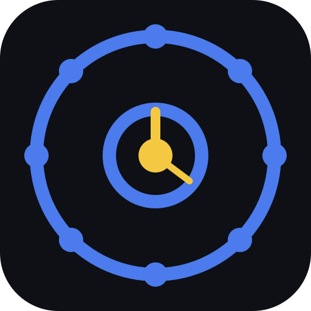

Video Runtime Tracker
Fast local runtime scan — no uploads.
v8 fast
📂
Drop a video folder here
or choose one below
📁 Choose Folder
🗂 Legacy Picker
Scanning…
✕ Cancel
0 / 0 videos
Total Runtime
00:00:00
💾 Save
⬇ Export CSV
📋 Copy
🔄 New Scan
Filename
Duration
Status
SCAN HISTORY
Clear